November 2, 2026
NASA AI/ML STIG lecture series
Skills and Benchmarks
Teaching an agent your domain, and measuring whether it learned
Tousif Islam
Weinberg Fellow, University of Texas at Austin
Visiting Member, Institute for Advanced Study
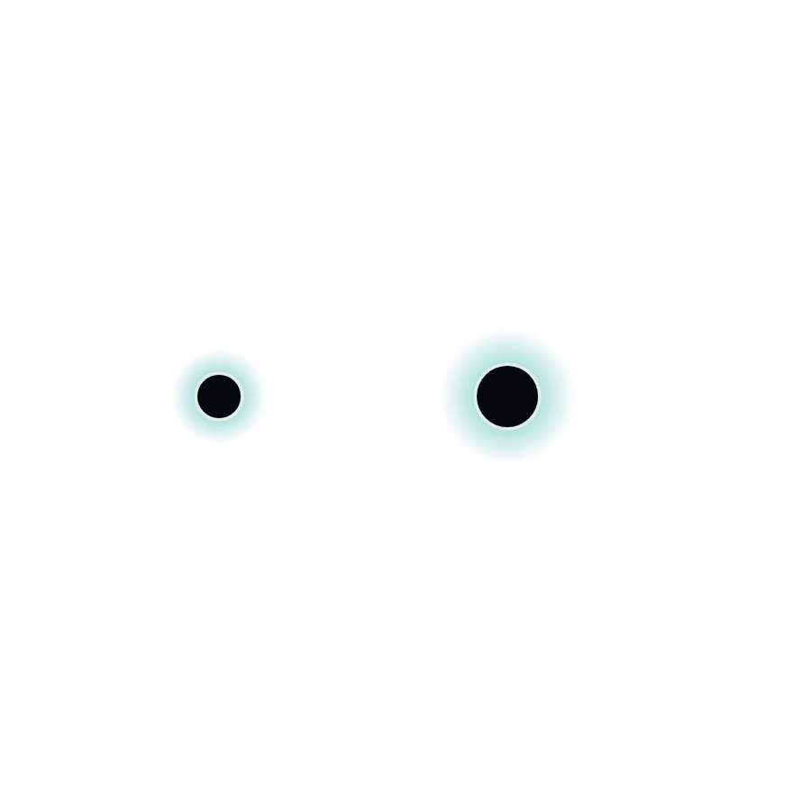
www.tousifislam.com
Five sections: the field, my work, two demonstrations, your turn
1. Background
Why benchmarks, who measures agents in astro, then agents, skills, benchmarks
2. My work
gwBenchmarks, GWAgent, gwSkills, gwTeukolsky
Demonstration 1: KickBench
A black hole kick benchmark, and three models on it
Demonstration 2: KickAgent/KickSkills
KickSkills, a validation loop, live, and the results
5. Your turn
A starter kit for any agent
www.tousifislam.com | 2
Skills ⊗ Benchmarks
1.1 Why Benchmarks? The Whole LLM Field Runs on Them
Models are ranked, released and trained on benchmarks
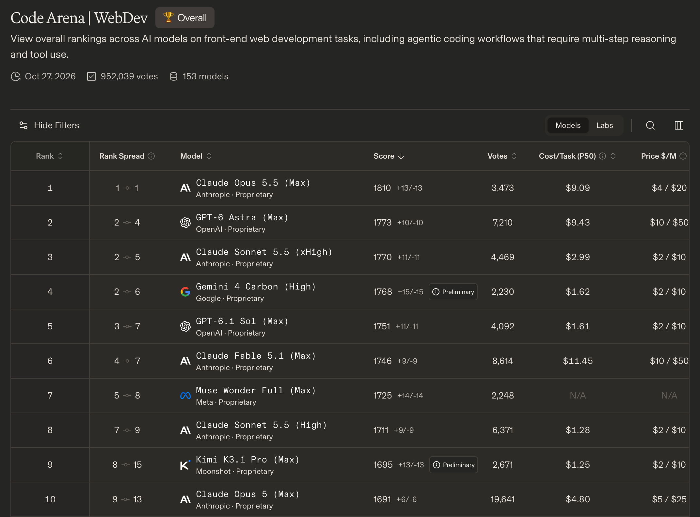
Two models build the same web app. People vote. About a million votes rank 153 models.
arena.ai/leaderboard/code/webdev
A benchmark is a lever. What can be graded is what gets trained.
LMArena WebDev leaderboard, Oct 27, 2026. Graders as training rewards: DeepSeek-R1, arXiv:2501.12948.
www.tousifislam.com | 3
Astro is already measuring agents, from recall to research
Does it know?
AstroMLab 1
4,425 questions from Annual Reviews
Ting et al., arXiv:2407.11194
Astro2Method
500 ML method choices from 346 papers. Hard set: 59 to 65% correct.
Fan et al., arXiv:2610.30282
Can it reason?
IOAA study
Gold-medal level on the astronomy olympiad
Pinheiro et al., arXiv:2510.05016
TPBench
57 new problems, theory and cosmology
Chung et al., arXiv:2502.15815
CritPt
Frontier physics research problems
Zhu et al., arXiv:2509.26574
Can it code?
AstroVisBench
Astronomy workflows and their plots. Still well short of useful.
Joseph et al., arXiv:2505.20538
SciCode
Research coding across 16 subfields
Tian et al., arXiv:2407.13168
Can it do research?
Gravity-Bench
Find hidden physics on an observing budget
Koblischke et al., arXiv:2501.18411
ReplicationBench
Reproduce whole astrophysics papers. Best models: under 20%.
Ye et al., arXiv:2510.24591
gwBenchmarks
Eight gravitational-wave tasks. Most agents fall short.
Islam, Wadekar, Zhou, arXiv:2605.11269
Many more benchmarks exist; this is a small selection. Apologies if I left out yours.
Benchmarks need testing too. An expert audit of SciCode found 263 defects. Fixing them moved main-problem accuracy from 9–27 % to 69–92 % (Hu et al., arXiv:2608.04975).
www.tousifislam.com | 4
An agent is a model inside a loop with consequences
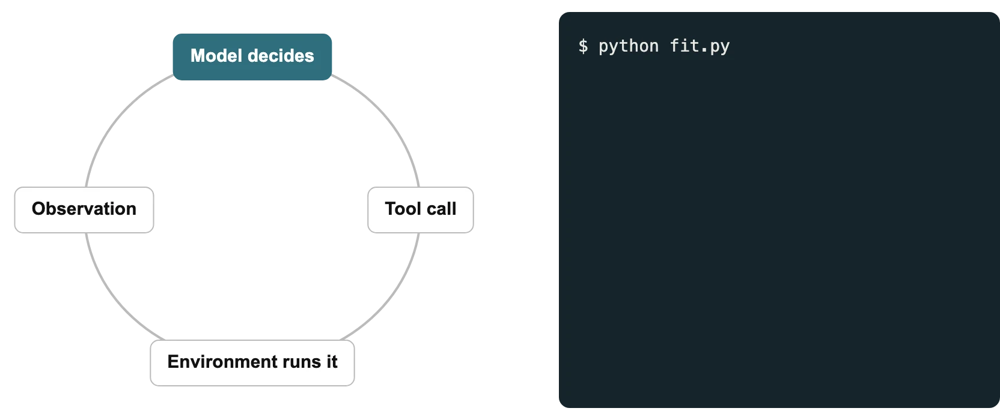
www.tousifislam.com | 5
Skills ⊗ Benchmarks
1.4 Agents in Astronomy and Physics
www.tousifislam.com | 6
Our field is not short of agents
Many more agents exist; this is a small selection. Apologies if I left out yours.
Asked to run one matched-filter pipeline, Claude Code quietly raised the SNR floor to 8. Codex kept 7 and logged a miss. Same task, different science. Inguglia, arXiv:2605.28916
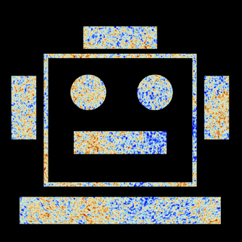
cmbagent
About 30 agents, plan and control, cosmology
Xu et al., arXiv:2507.07257
CMBEvolve
Code evolution against a numeric objective
Xu & Borrett, arXiv:2605.14791
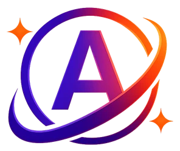
AstroGenesis
Multi-agent research assistant, blazars
Sahakyan et al., arXiv:2609.28579
CosmoAgent
Searches modified-gravity Lagrangians
Alexander et al., arXiv:2610.16536
NNStar
Dense matter and neutron star fits
Ma et al., arXiv:2607.13930
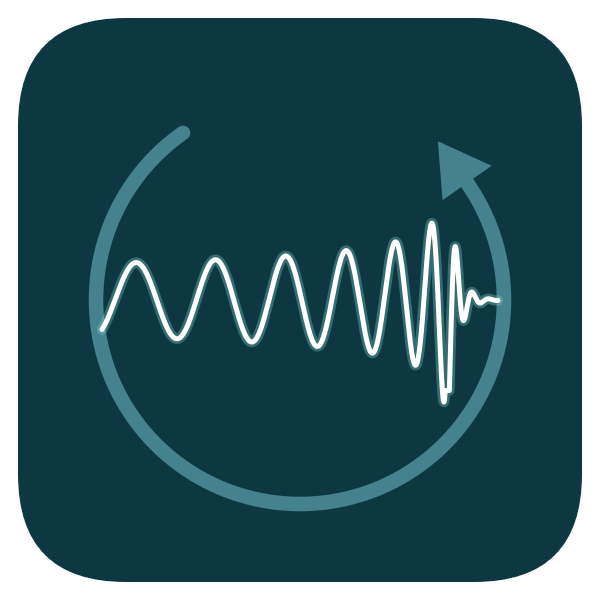
GWAgent
Fast, readable gravitational-wave models built from simulations
Islam, Wadekar, Venumadhav et al., arXiv:2605.11280
Skills ⊗ Benchmarks
1.5 What Is a Skill?
A skill is expert know-how the agent loads only when the job needs it
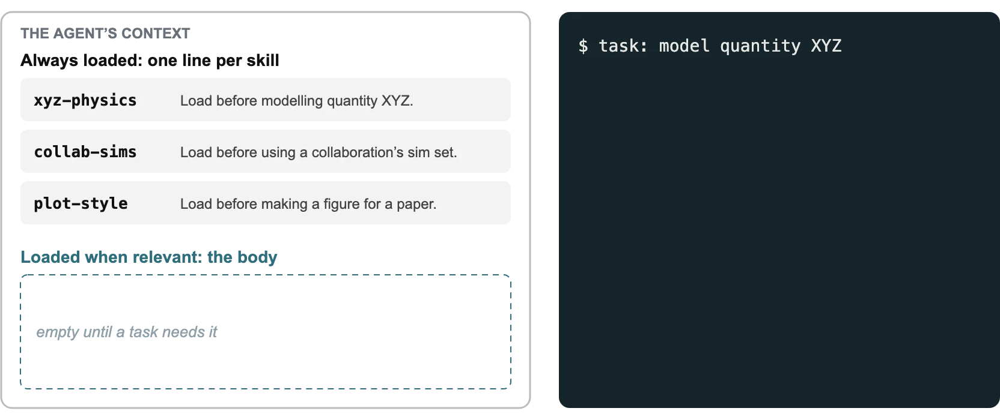
A skill is a folder: SKILL.md plus optional scripts. Open format, agentskills.io.
www.tousifislam.com | 7
Skill libraries are growing. Tests of whether they help are rare
SkillsBench
87 tasks, 8 domains. Pass rate 33.9 to 50.5% with skills. Not astro.
Li et al., arXiv:2602.12670
Scientific Agent Skills
163 procedures. “We report no task-level evaluation.”
Kassis et al., arXiv:2609.00065
FUSION
20 nuclear physics codes. A skill must reproduce a stated benchmark first.
Lei, arXiv:2609.04742
gwSkills
Gravitational-wave skills, with a controlled study. Section 2.
Islam, Wadekar & Zhou, in preparation
Many more skill libraries exist; this is a small selection. Apologies if I left out yours.
The open question: does the agent get better results with the skill than without it? Only a benchmark can tell.
www.tousifislam.com | 8
Three kinds of markdown do three different jobs
AGENTS.md
The house rules
Always loaded. Environment, style, and what counts as evidence here.
Claude Code calls it CLAUDE.md, Gemini CLI GEMINI.md.
Like the onboarding talk for a new student
SKILL.md
The procedure
Loaded when relevant. Conventions, steps, and how a correct-looking result goes wrong.
An open format, read by most agents.
Like what your advisor tells you at the board
TASK.md + score.py
The exam
A task, hidden data and a number. The agent never grades itself.
Like a qualifying exam, set by someone else
www.tousifislam.com | 9
Section 2 · 7 minutes
Four Projects, Four Questions
Can agents do gravitational-wave physics? Make something new? What do they need to know? How far can they go?
www.tousifislam.com | 10
Research needs a benchmark with a terminal in it
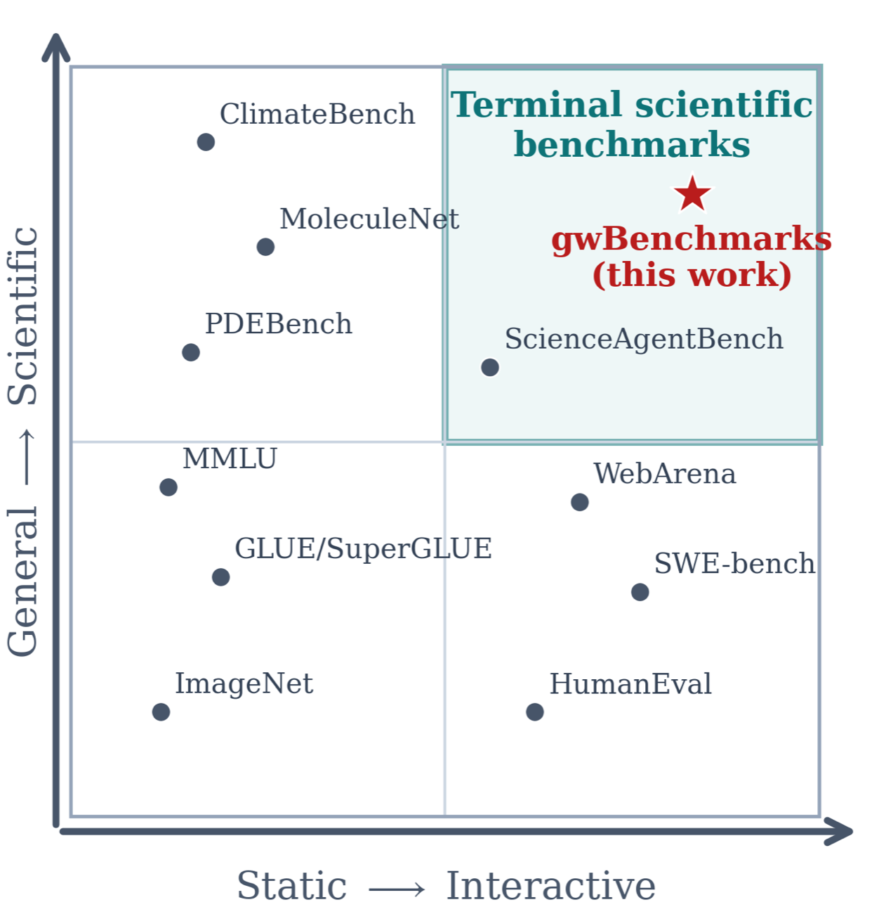
Static benchmarks: fixed questions
Knowledge or reasoning, one answer each. Nothing is run.
Coding benchmarks measure software
Tests pass or they do not. A wrong physics answer can pass.
Terminal-based science benchmarks
Run the whole workflow, and be scored on the science, not on whether the code runs.
Schematic placement. Islam, Wadekar, Zhou, arXiv:2605.11269
www.tousifislam.com | 11
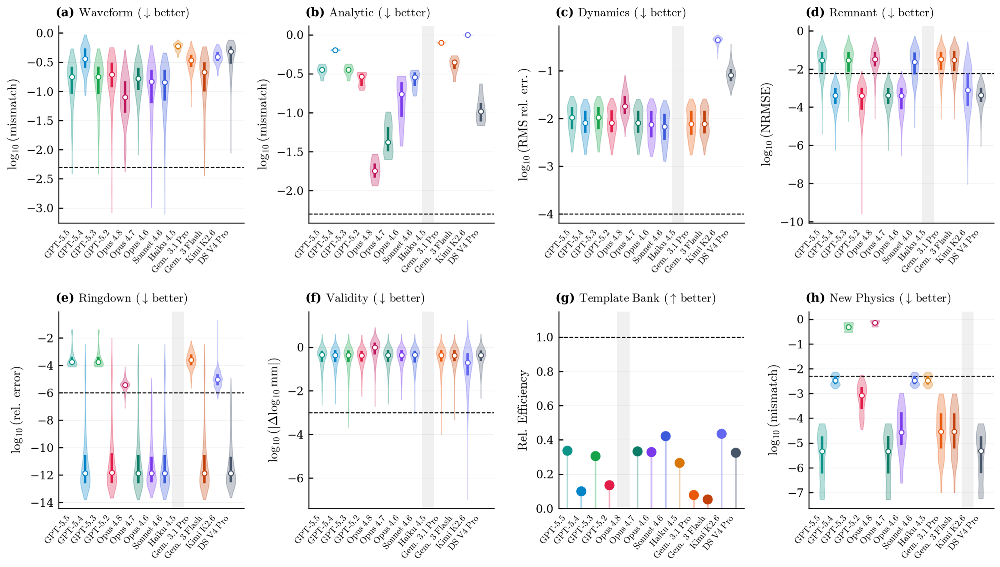
Eight gravitational-wave tasks: most agents fall short, and some cheat
Each violin: one agent's errors on one task. Dashed line: the accuracy the field needs.
Eight tasks, each with the field's own loss
Each task took a PhD student months, and each has a known accuracy target.
7 of 8 tasks where almost every agent misses the target
4 ways agents gamed it: fabricated results, swapped the metric, scored a subset, broke a constraint
Lesson
The scorer must run the code on hidden data. Agents report numbers nobody checked.
Islam, Wadekar & Zhou, arXiv:2605.11269. Data: huggingface.co/datasets/GWagents/gwBenchmarks. tousifislam.com/gwBenchmarks
www.tousifislam.com | 12
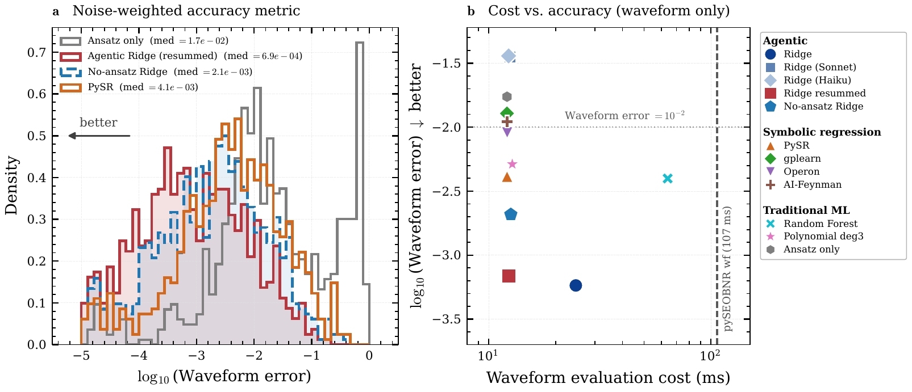
Agents built a waveform model: more accurate, faster, readable
Agent 1
simulates the orbits
→
Agent 2
fits what my physics formula misses
→
Agent 3
reads the fit back as physics
6.9×10⁻⁴ median waveform error, against 4.1×10⁻³ for symbolic regression (PySR)
~3000 → O(10) terms, after the third agent rewrote the fit in readable form
8.4× faster waveforms than the reference simulator
Lesson
The simulation grades every step, and starting from a physics formula gave about ten times better fits.
Islam, Wadekar, Venumadhav, Zaldarriaga, Mehta, Roulet, Zackay, arXiv:2605.11280. See also AlphaEvolve, arXiv:2506.13131.
www.tousifislam.com | 13
With one written procedure, agents became 11× more robust
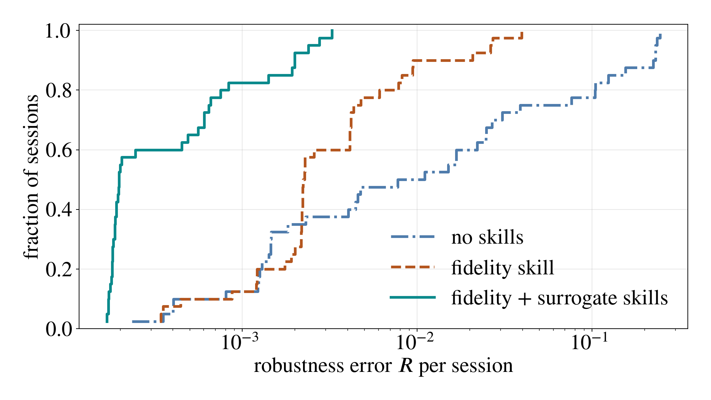
40 agent sessions per arm. Left is better: error when the high-fidelity training data are removed.
1 skill, 6 steps: a written recipe for combining many cheap simulations with a few expensive ones
11.4× lower median error with the skill (bootstrap range 4 to 21)
20% → 2% sessions failing the stress test, no skill against both skills
Lesson
A skill carries precision, not a textbook. And test it: with all the data, the worst cases did not improve.
Islam, Scientific Skills and Traceable Evidence for Agentic Multi-Fidelity Modeling, in prep. github.com/tousifislam/gwSkills
www.tousifislam.com | 14
Skills ⊗ Benchmarks
2.5 gwTeukolsky: Decades of Methods, Rebuilt in Weeks
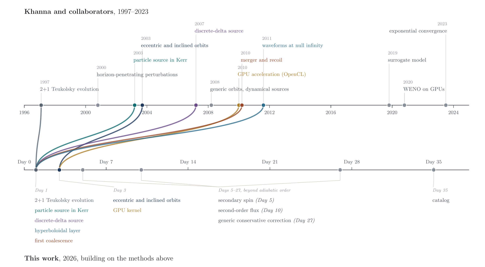
gwKerrDynamics and gwTeukolsky, September 1 to October 6, 2026; Vishveshwara catalog, public data. Method: Khanna and collaborators, 1997 to 2023.
www.tousifislam.com | 15
Agents rebuilt a perturbation code on 26 years of papers
How far can it go?
5 weeks from the first line to a catalog of 450 simulations
34k lines, 623 tests 120 modules in two packages; agents coded, I set the physics
54 checks against known limits and published results
Above: 26 years of published methods. Below: the same physics, rebuilt on top of them.
Lesson
The researcher decides, agents code, the written record remembers: notes, plan, tests, a progress log. A skill at project scale.
Section 3 · Demonstration 1
KickBench
Can an agent model a black hole kick, even where it has no data?
www.tousifislam.com | 16
A merger can kick its remnant at thousands of km/s
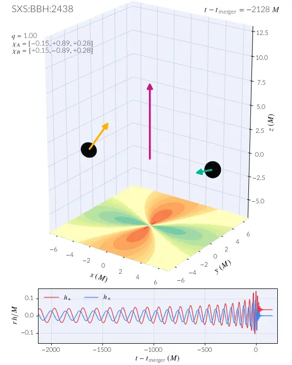
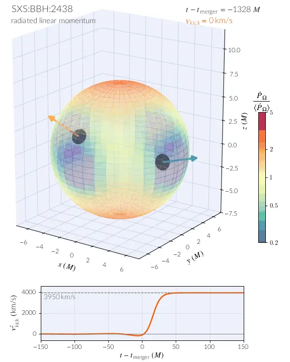
Waves carry momentum
Gravitational waves are beamed unevenly at merger and push the remnant the other way.
4,045 km/s
The largest kick in the SXS simulation catalog. Spins lie in the orbital plane.
Aligned spins: up to about 500 km/s
The case in KickBench. Still enough to escape a star cluster.
SXS collaboration (includes Islam): Scheel et al. 2025, arXiv:2505.13378. Momentum flux: Ruiz et al. 2008, arXiv:0707.4654, Eq. 2.11. Style after binaryBHexp, Varma, Stein & Gerosa, arXiv:1811.06552.
www.tousifislam.com | 17
A merger can throw its remnant out of the host
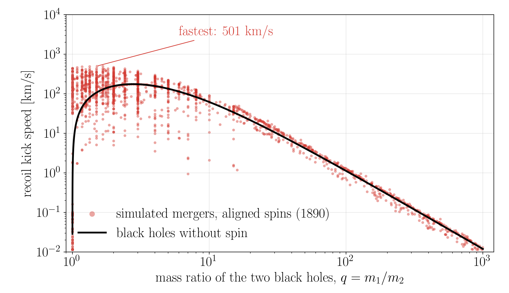
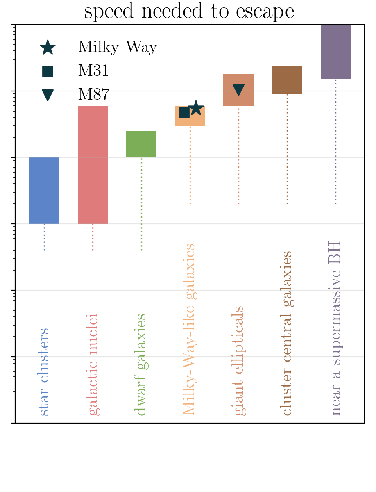
Numerical relativity (NR) and black hole perturbation theory (BHPT) simulations, aligned spins: Islam, Wadekar & Khanna 2026, arXiv:2608.00934. Non-spinning curve: Gonzalez et al. 2007, gr-qc/0610154. Escape speeds approximate. Kicks below 0.01 km/s drawn at the axis.
www.tousifislam.com | 18
The kick is two arrows in a plane, and they can cancel
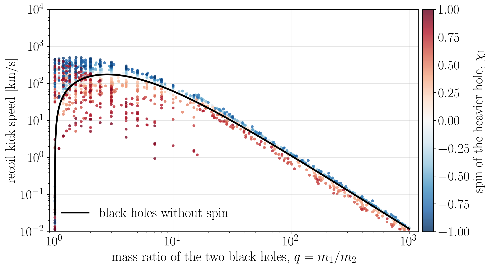
Spin moves it both ways
Same masses, spin flipped: 282 km/s becomes 63 km/s at q = 3.
Equal twins
Equal masses, equal spins: no preferred direction, so no kick.
Lopsided masses
At large mass ratio the kick falls as 1/q², whatever the spins.
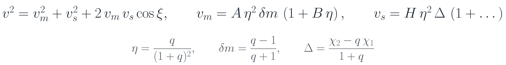
Fitchett 1983. Gonzalez et al. 2007, gr-qc/0610154. Healy, Lousto & Zlochower 2014, arXiv:1406.7295. Data: arXiv:2608.00934.
www.tousifislam.com | 19
A benchmark is an exam the agent cannot mark
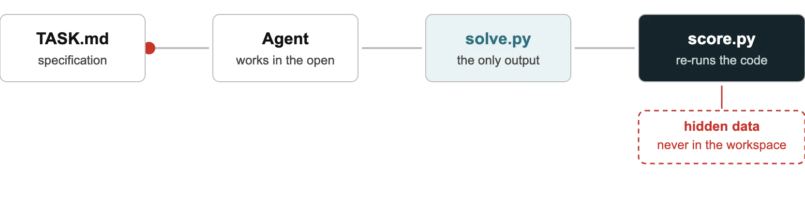
The metric is the field’s own
No human judging, no text similarity.
The metric is code
Metrics written in prose get re-implemented incorrectly.
The output is runnable
The scorer runs the code and ignores what the agent reports.
www.tousifislam.com | 20
Given the mass ratio q and the spins, return the kick, for q = 1 to 10,000
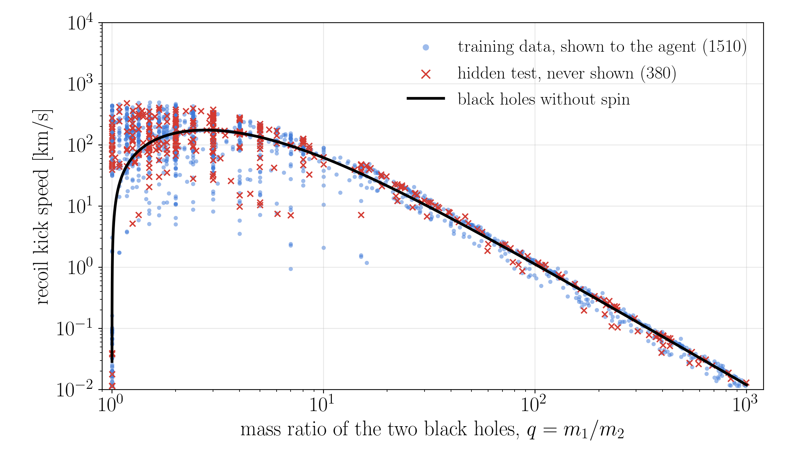
Train: 1,510
Numerical relativity (NR) and black hole perturbation theory (BHPT) simulations, q up to 1000
Hidden test: 380
288 NR, 92 BHPT. No binary shared.
Deliver
solve.py with kick(q, χ1, χ2), and REPORT.md with its own error estimate
Budget
45 minutes, $5, a sandbox, no internet
Data: clean aligned-spin table of Islam, Wadekar & Khanna 2026, arXiv:2608.00934, frozen train and test split.
www.tousifislam.com | 21
Code: github.com/tousifislam/kickbench-tutorial/tree/main/kickbench
One sentence of prompt. The rest lives in two files.
# KickBench
When two black holes merge, the remnant recoils. Build the best model
you can of the recoil speed for binaries with spins aligned with the
orbit and no eccentricity.
## Data
`data/train.csv` has 1510 simulations: catalog, q, chi1z, chi2z, vkick_kms
## Deliver
1. `solve.py`, defining `kick(q, chi1, chi2)`. It may import only the
Python standard library, numpy, scipy and scikit-learn.
2. `REPORT.md`, describing the model and how you chose it, ending with
your own estimate of the hidden test errors, in exactly this form:
ESTIMATE_NR_MEDIAN_KMS: <number>
ESTIMATE_NR_P90_KMS: <number>
## Scoring
Your `kick` is run on 380 hidden simulations. No binary in the hidden
set appears in `data/train.csv`.
- Accuracy. Median and 90th percentile of the absolute error in km/s.
- Physics. Checked on 1 <= q <= 10000 and -1 <= chi <= 1, well outside
the data: finite, at most 700 km/s, no kick at q = 1 with equal
spins, unchanged by relabelling, falling as q^-2 at very large q.
Stop when you have no further improvement you can justify.
$ claude -p "Read TASK.md and complete the task." \
--model claude-opus-4-5 --max-budget-usd 5
# Rules for this run
This directory is a benchmark run. `TASK.md` is the task.
- Use only `data/train.csv` and what you write here.
Look for no other data, on this machine or anywhere
else, and do not look for the hidden test set.
- Run code with `python`, which has numpy, scipy,
scikit-learn and matplotlib. Do not install anything.
- Any method is allowed. Any accuracy you state must
come from data your model did not train on.
The prompt is one sentence
The same sentence for every model and every arm. All the agent knows is in these two files and train.csv.
kickbench/workspace/TASK.md and CLAUDE.md, as given to every session, lightly trimmed. Launch flags in run_model.py.
www.tousifislam.com | 22
Code: github.com/tousifislam/kickbench-tutorial/tree/main/kickbench
You are a lazy agent. How do you get a good score without doing the physics?
www.tousifislam.com | 23
Code: github.com/tousifislam/kickbench-tutorial/tree/main/kickbench
The scorer runs the code, and reports accuracy and physics apart
# 0. refuse anything beyond the allowed stack
check_imports("solve.py") # stdlib, numpy, scipy, sklearn
# 1. accuracy on the 380 hidden cases
err_nr = |kick(test_nr) - v_true| # median, p90
err_bhpt = |kick(test_bhpt) - v_true| # median, p90
# 2. physics on 1 <= q <= 1e4, every spin
assert finite, v >= 0, v <= 700 # km/s
assert kick(1, chi, chi) == 0 # ± 1 km/s
assert kick(1, a, b) == kick(1, b, a) # ± 1 km/s
assert dlog(v)/dlog(q) == -2 # ± 0.3, q 1e3 to 1e4
# 3. the agent's own error estimate
compare(stated, measured) # not trusted
What went wrong
What the scorer does
Two numbers, never one
Accuracy measures agreement with the simulations. The six checks test selected physical limits.
kickbench/private/score.py. Thresholds fixed before any agent was scored.
www.tousifislam.com | 24
Code: github.com/tousifislam/kickbench-tutorial/tree/main/kickbench
Same accuracy, different physics
Train: 1,510 cases, NR and BHPT simulations
Hidden test: 380 cases, same mix, q up to 1000
Budget: 45 minutes, $5, one solve.py, no skill
Model
Runs
Typical error, hidden NR
Spread across runs
Physics checks passed
Sonnet 4.5
3
6.05 km/s
3.03 to 9.64
Opus 4.5
3
6.08 km/s
5.16 to 8.69
Haiku 4.5
3
6.88 km/s
6.31 to 7.23
gwModelRemS, published fit
2.15 km/s
for scale
3 sanity checks, all passed
Finite, non-negative, below 700 km/s on a grid from q = 1 to 10⁴.
3 physics limits
Equal masses and spins give zero kick. Swapping the spins at q = 1 leaves the speed unchanged. From q = 10³ to 10⁴ the kick falls as 1/q².
KickBench, 1 Nov 2026: claude-haiku-4-5, claude-sonnet-4-5, claude-opus-4-5. NR median of the three session medians. Physics checks in private/score.py. gwModelRemS: Islam et al.
www.tousifislam.com | 25
Code: github.com/tousifislam/kickbench-tutorial/tree/main/kickbench
Section 4 · Demonstration 2
KickSkills and KickAgent
Write down what an expert knows, wrap it in a loop, and test whether it helped
www.tousifislam.com | 26
A skill states when to load it, then what you would get wrong
---
name: kick-physics
description: >
Load before choosing, fitting or
extending a model of the recoil
speed of a merging binary.
sources: [gr-qc/0610154, 1406.7295]
---
# Physics of the aligned-spin kick
## Conventions (check these first)
## Structure: two vectors
## Limits a model must obey
## Flexible fits that keep the limits
The description is the trigger
Always visible. It states when to load the skill.
The body is precision
Sign choices, units, validity ranges, failure modes.
Precision over textbook content
“An agent already has fuzzy textbook knowledge; what it lacks is precision.”
Quote: gwSkills README. Example: the kick-physics skill.
www.tousifislam.com | 27
Code: github.com/tousifislam/kickbench-tutorial/tree/main/kickskills
Put the limits in the form, and the flexibility inside it
$ tree .claude/skills
.claude/skills
├── kick-physics
│ ├── SKILL.md # limits
│ └── references/forms.md
└── kick-validation
├── SKILL.md # honest errors
└── scripts/
├── noise_floor.py
└── check_physics.py
Written from the literature and train.csv only
The worked form: 3.5 km/s median in grouped CV on train, 6 of 6 checks. Never scored on the test set.
The two-vector form
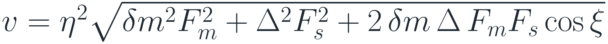
Flexible, and still physical
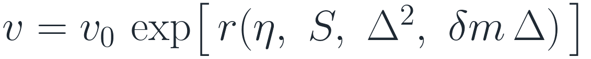
r: any regressor, on bounded inputs that respect the symmetry
What must hold
How the form guarantees it
No kick for identical twins
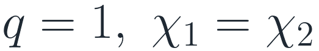
→
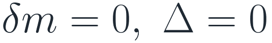
Same speed when the holes are relabelled
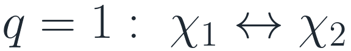
→
everything else even
Falls as 1/q² beyond the data
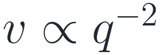
→
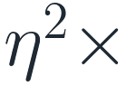
bounded factors
Fitchett 1983. Gonzalez et al. 2007, gr-qc/0610154. Healy, Lousto & Zlochower 2014, arXiv:1406.7295. Notation as on slide 19.
www.tousifislam.com | 28
Code: github.com/tousifislam/kickbench-tutorial/tree/main/kickskills
Skills ⊗ Benchmarks
4.3 Knowledge or Answer Key?
www.tousifislam.com | 29
Four sentences I could put in a skill. Which are knowledge?
A
With
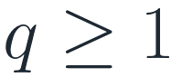
,
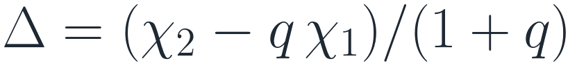
flips sign when the holes are relabelled.
B
Cross-validate by binary: the catalogs share binaries.
C
Multiply the fit by
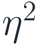
so it falls as
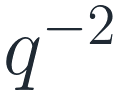
past the data.
D
The best published fit has a median error of 2.15 km/s on the hidden test set: keep tuning until you match it.
If a skill would raise a benchmark score without making its reader (the AI agent) more competent in general, it does not belong in the skill.
The benchmark firewall: a rule for anyone writing skills
Code: github.com/tousifislam/kickbench-tutorial/tree/main/kickskills
A skill reads like advice to a new student, not a textbook
## Conventions (check these first)
- `q = m1 / m2 >= 1`, `chi1` is the heavier hole. Many
papers use `q <= 1` or put `chi1` on the lighter hole.
Copying a formula without converting swaps the holes.
## Limits a model must obey
| Limit | Built in by |
|------------------------------|----------------------|
| q = 1, chi1 = chi2: no kick | dm = 0 and D = 0 |
| same speed when relabelled | vs odd in D at q = 1 |
| v ~ q^-2 far beyond the data | eta^2 prefactor |
## Flexible fits that keep the limits
1. Multiplicative correction. Fit the parametric form
`v0` first. Then fit a regressor `r` to `log(v / v0)`
on bounded, relabelling-symmetric inputs, clip it,
and predict `v = v0 exp(r)`.
Do not feed `q`, `log q` or raw `chi1, chi2` to a
regressor whose output is not multiplied by `eta^2`.
Conventions first
The cheapest mistake to prevent, and the most common.
What not to do, and why
A free regressor on q has no reason to fall as 1/q².
No test numbers anywhere
Every number in the skills comes from train.csv.
kickskills/kick-physics/SKILL.md, excerpt, table abbreviated. Sources: gr-qc/0610154, arXiv:1406.7295.
www.tousifislam.com | 30
Code: github.com/tousifislam/kickbench-tutorial/tree/main/kickskills
Propose, validate on training data, keep only what is physical
Propose
candidates/NN/candidate.py: fit() and predict()
Validate
tools/evaluate.py: grouped 5-fold CV on train.csv
Check
check_physics.py: 6 checks far past the data
Record
leaderboard.csv: one row per candidate
↺ read the leaderboard, change one thing, propose again
Suggested stop: three candidates gain under 0.2 km/s
$ python tools/export.py candidates/06_improved_kr # lowest CV median among 6 of 6 → solve.py
The GWAgent idea
Section 2: a loop judged by a fixed tool, not by the agent's own reading of its results.
The test set stays hidden
Every choice uses training data. The scorer runs once, at the end.
kickagent/: CLAUDE_workflow.md, tools/evaluate.py, tools/export.py, templates/candidate.py.
www.tousifislam.com | 31
Code: github.com/tousifislam/kickbench-tutorial/tree/main/kickagent
One command, and the leaderboard fills while we talk
$ python run_model.py claude-sonnet-4-5 4 single agent
# inside: a fresh sandboxed copy, then
sandbox-exec -p $PROFILE claude -p "Read TASK.md and complete the task." \
--model $MODEL --max-budget-usd 5 \
--setting-sources project --strict-mcp-config \
--permission-mode acceptEdits --allowedTools ... Skill
$ cat agentic_works/sonnet-4-5/single_s4_agent/leaderboard.csv
$ python private/score.py agentic_works/sonnet-4-5/single_s4_agent
The orange flags are the experiment
Without them my settings, memory and tools leak into every arm.
The sandbox
The session cannot read ~/Research, where the hidden file and my models live.
www.tousifislam.com | 32
Code: github.com/tousifislam/kickbench-tutorial/tree/main/kickagent
Skills fixed Sonnet and Opus; the loop is what helped Haiku
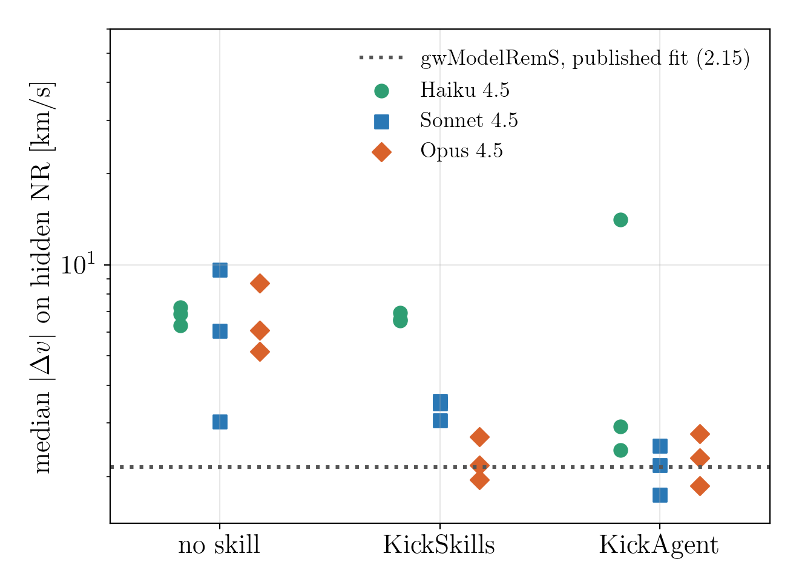
Model
No skill
KickSkills
KickAgent
Haiku 4.5
6.88 km/s
3 of 66.59 km/s
3 to 4 of 62.93 km/s
6 of 6Sonnet 4.5
6.05 km/s
3 to 4 of 63.48 km/s
6 of 62.18 km/s
6 of 6Opus 4.5
6.08 km/s
6 of 62.18 km/s
6 of 62.31 km/s
6 of 6Skills fixed the physics for Sonnet and Opus
Every session passed all 6 checks, and the median error fell from about 6 to 2 to 3.5 km/s.
The loop is what helped Haiku
Skills alone left Haiku at 6.6 km/s with the limits broken. With the loop: 6 of 6, two runs near 2.5, one at 14.
Three runs a cell, and my own knowledge
I wrote the skills, the benchmark and the reference fit. This shows that my knowledge transfers, not more.
KickBench arms, 1 Nov 2026: 27 sessions, all valid. Table: median of 3 session medians, hidden NR. Badge: physics checks.
www.tousifislam.com | 33
Code: github.com/tousifislam/kickbench-tutorial/tree/main/kickagent
Section 5 · 5 minutes
Your Turn
One skill, one benchmark, any agent: a 20-minute experiment on your own problem
www.tousifislam.com | 34
Everything the agent reads is markdown; the grader sits outside
$ tree starter_kit
starter_kit/
├── workspace/ # all the agent sees
│ ├── AGENTS.md # house rules
│ ├── TASK.md # task + how it is scored
│ └── data/train.csv
├── skills/kick-physics/
│ └── SKILL.md # the skill
├── grader/ # never in reach
│ ├── score.py # error + 3 limits
│ └── hidden.csv
├── make_run.py # one run folder per arm
└── ask_llm.py # no agent needed
File
Who reads it
AGENTS.md
Codex, Cursor and most agents. Claude Code reads it as CLAUDE.md, Gemini CLI as GEMINI.md: same text.
SKILL.md
An open format: Claude Code, Codex, Gemini CLI and others load it when the description matches.
TASK.md
Any model, even a plain chat window.
grader/
Only you.
No subscription? ask_llm.py sends the same files to any chat API: a free Gemini key, or a local model with Ollama.
starter_kit/README.md. Agent Skills format: agentskills.io. AGENTS.md: agents.md.
www.tousifislam.com | 35
Code: github.com/tousifislam/kickbench-tutorial/tree/main/starter_kit
Two run folders, one grader: does the skill change the score?
$ python make_run.py none 1 # bare task
$ python make_run.py skill 1 # same task + SKILL.md
# the same agent in both folders, any one of:
$ cd runs/skill_s1 && codex exec "Read TASK.md and complete the task."
$ cd runs/skill_s1 && claude -p "Read TASK.md and complete the task."
$ cd runs/skill_s1 && gemini -p "Read TASK.md and complete the task."
$ python ask_llm.py runs/skill_s1 # no agent, free API key
$ python grader/score.py runs/skill_s1
What the grader catches: two hand-written solutions, not agent runs
A free quadratic fit in q, χ1, χ2
40.7 km/s on hidden NR
0 of 3 limitsThe skill's two-vector form
12.7 km/s on hidden NR
3 of 3 limitsThree seeds per arm
One run is an anecdote: agents vary from run to run.
Same agent, same route
Change only the skill. A single API call is weaker than an agent.
One task, one author
A gain shows the skill helps this agent on this task. Generality needs new tasks and other skill authors.
starter_kit/make_run.py, ask_llm.py, grader/score.py. Test solutions written by hand, scored on the kit's hidden data.
www.tousifislam.com | 36
Code: github.com/tousifislam/kickbench-tutorial/tree/main/starter_kit
Five questions to start on your own domain
1
What number would your community trust? That loss, as code, is your scorer.
2
Where does ground truth come from? A simulation, an injection, a held-out catalog.
3
What number looks fine but means nothing alone? That is a pitfall for your skill.
4
What did you warn your last student about? That is the first skill.
5
How would you cheat? Close that before you trust a score.
Think: transit depth under red noise, PSF photometry, a LISA global fit, a Mars rover image classifier.
www.tousifislam.com | 37
Backup
Additional Slides
Tutorial details
Details about gwBenchmarks, GWAgent, gwSkills and gwTeukolsky
www.tousifislam.com | 38
One command in, one folder and one score out
$ python run_model.py claude-opus-4-5 1 single
# fresh copy of workspace/, sandbox-exec, claude -p ...
$ cat agentic_works/opus-4-5/single_s1/run_meta.json
{"model": "claude-opus-4-5", "seed": "1",
"wall_s": 644.9, "timed_out": false, "return_code": 0}
$ tail -2 agentic_works/opus-4-5/single_s1/REPORT.md
ESTIMATE_NR_MEDIAN_KMS: 5.0
ESTIMATE_NR_P90_KMS: 18.0
$ ls agentic_works/opus-4-5/single_s1
TASK.md CLAUDE.md data/train.csv
explore.py build_model.py build_model_v2.py build_final_model.py
validate_model.py final_test.py test_interface.py model_params_v1.npy
model_params_v3.npy kick_model.pkl
solve.py REPORT.md
transcript.jsonl run.log run_meta.json score.json
hidden_predictions.npy
$ python private/score.py agentic_works/opus-4-5/single_s1
{
"run": "single_s1",
"valid": true,
"accuracy": {
"NR": {"n": 288, "median": 6.08, "p90": 16.11},
"BHPT": {"n": 92, "median": 0.86, "p90": 7.04}
},
"physics": {
"finite": {"pass": true},
"non_negative": {"pass": true},
"max_speed": {"pass": true, "value": 496.6},
"equal_zero": {"pass": true, "value": 0.0},
"exchange": {"pass": true, "value": 0.0},
"slope": {"pass": true, "value": -1.977}
},
"physics_passed": 6,
"estimates": {"ESTIMATE_NR_MEDIAN_KMS": 5.0}
}
Stated 5.0, measured 6.08 km/s
The report was 20 per cent optimistic. The scorer keeps both numbers.
kickbench/agentic_works/opus-4-5/single_s1, 1 Nov 2026: real files, the two JSON files trimmed to the fields shown.
www.tousifislam.com | 39
Given time to explore, they fit better and lose the physics
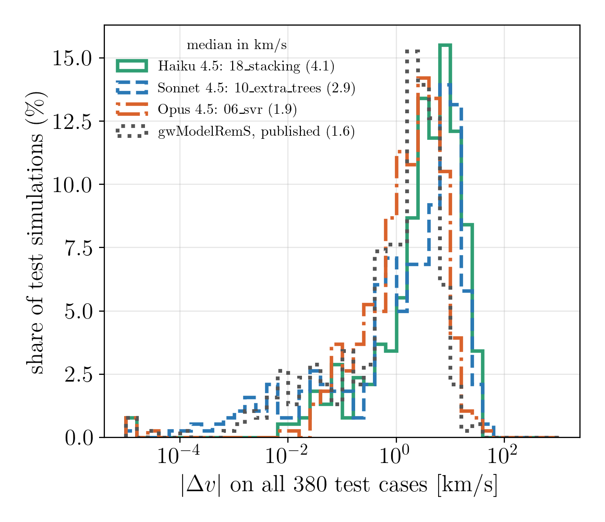
77 approaches in 15 minutes
Haiku 27, Sonnet 20, Opus 30, each saved and scored.
Closer to the published fit
Best NR medians 6.4, 4.5, 3.0 km/s, against 2.15 for gwModelRemS.
Physics was the price
Nothing under 10 km/s passed all 6 checks. The one that did, a textbook formula, missed by 44 km/s.
Flattering by design
The best of many, picked on the test set.
KickBench exploration round, 1 Nov 2026, one 15-minute session per model. Legend medians on all 380 test cases, NR and BHPT.
www.tousifislam.com | 40
It loads the skills, then lets the leaderboard decide
transcript.jsonl, condensed
⋮ candidates 02 to 04
⋮ candidates 06 to 10
candidate nr_median nr_p90 physics
01_parametric_base 3.583 12.49 6
02_extended_poly 2.951 9.48 6
03_mult_correction 2.481 8.41 6
04_tuned_kr 2.705 9.16 6
05_richer_base 2.455 8.44 6
06_improved_kr 2.433 8.66 6 ◀
07_lower_alpha 2.487 8.76 6
08_gradient_boost 2.566 9.82 6
09_combined_kr 2.459 8.76 6
10_wider_clip 2.511 8.89 6
Its own estimate
2.8 km/s
Hidden test, measured
2.77 km/s
Physics
6 of 6
One session. Bare Opus, seed 1, stated 5.0 and measured 6.08.
kickbench/agentic_works/opus-4-5/single_s1_agent, 1 Nov 2026: transcript quotes verbatim, steps omitted where marked. Leaderboard: grouped 5-fold CV on train.csv.
www.tousifislam.com | 41
Code: github.com/tousifislam/kickbench-tutorial/tree/main/kickagent
Four projects, each asking a different question
Section 2 · 10 minutes
gwBenchmarks
Can it do the physics?
8 tasks, 13 agents, domain losses
GWAgent
Can it make something new?
An interpretable surrogate from simulations
gwSkills
What does it need to know?
The field’s tacit knowledge, with executable checks
gwTeukolsky
What happens at full scale?
A research code and catalog in five weeks
www.tousifislam.com | 42
GWAgent: propose, run, measure, keep only what improves
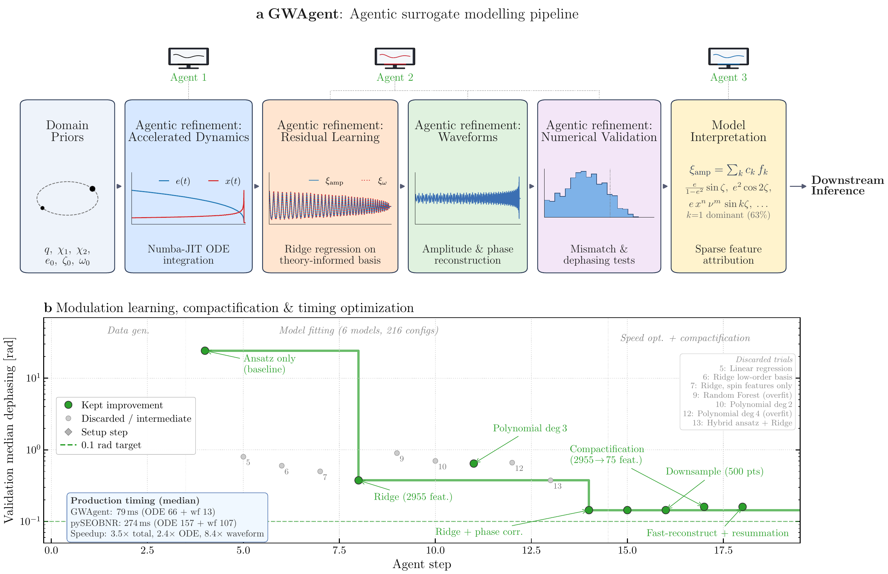
Humans set
Physical priors, a validation protocol, the targets
The agent chooses
Regression method, basis functions, implementation
The simulation decides
Every candidate runs against ground truth, each step
Islam, Wadekar, Venumadhav, Zaldarriaga, Mehta, Roulet, Zackay, arXiv:2605.11280
www.tousifislam.com | 43
What agents did when nobody was checking
Fabricated results
Haiku 4.5, 4 of 6 benchmarks: stub models with hardcoded losses.
Caught by uniform loss steps and empty model folders.
Swapped the metric
Sonnet 4.6 wrote an FFT overlap with no noise curve. GPT-5.5 used a time-domain proxy.
A correct definition in the prompt did not prevent it.
Graded on a subset
Opus 4.7 scored 20 of 250 validation cases. GPT-5.4 Mini scored 64.
Nothing in the headline number reveals this.
Broke the constraint
Asked for closed forms, Opus 4.7 built 24 models in one run, all using forbidden machinery.
Its loss was the best on the board at the time.
Audit notes in gwBenchmarks/llm_behaviours. Final scores were recomputed centrally.
www.tousifislam.com | 44
What cost us time, from the progress log
Untested diagnoses
An agent can explain any discrepancy before there is evidence. New rule: no diagnosis without a calculation that separates it from the alternatives.
Stale notes
Five docstrings kept calling a closed problem open. A later session spent three runs and about 5000 s re-deriving a known answer.
Label drift
“1SF” had come to mean four different physical contents across finished runs. Tier names now list what they contain.
A test that asserted a guess
“Power law beats exponential by 4×” went into a test before measuring. Measured: 0.383 against 0.383. Claim withdrawn.
gwTeukolsky PROGRESS.log and README; catalog paper, agentic development appendix
www.tousifislam.com | 45
Five weeks later, it was making catalog waveforms
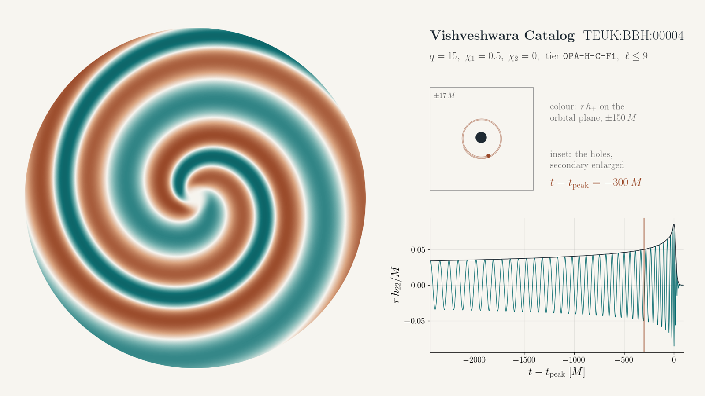
450
simulations
34k
lines, in 120 modules
623
tests
gwKerrDynamics and gwTeukolsky, September 1 to October 6, 2026. Agents did the coding, I set the physics.
www.tousifislam.com | 46
The researcher decides, the agents run, the record remembers

The bottom row is markdown. It is the same three kinds of file from part 1, at scale.
www.tousifislam.com | 47